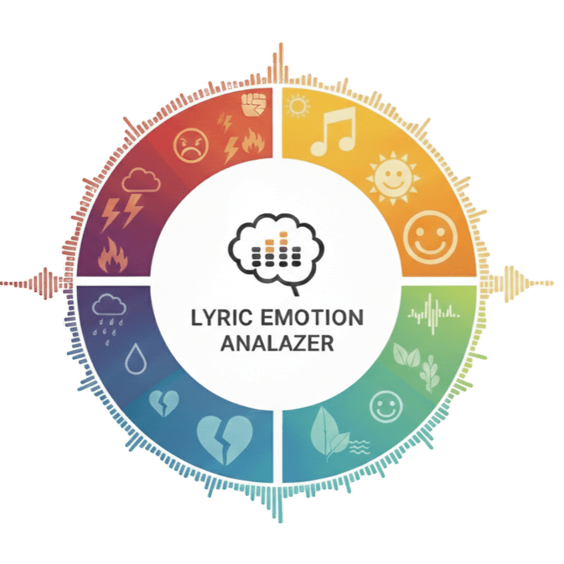

歌詞情緒分析
首頁
資料介紹
情緒分類
歌詞資料
中文情緒維度資料集
模型介紹
NLP介紹與模型比較
詞典法
BERT微調-情緒類別
BERT微調-V/A值
BERT微調-歌詞
結論與討論
成果展示
參考文獻
參考文獻
01.Russell 情緒環狀模型
https://reurl.cc/A9ylyZ
02.NLP
https://aws.amazon.com/tw/what-is/nlp/
03.傳統RNN模型
https://aws.amazon.com/tw/what-is/recurrent-neural-network/
04.T5模型
https://ithelp.ithome.com.tw/articles/10296626
05.GPT模型
https://aws.amazon.com/tw/what-is/gpt/
06.BERT模型
https://ithelp.ithome.com.tw/articles/10280392?sc=iThelpR
07.bert-base-chinese模型
https://huggingface.co/google-bert/bert-base-chinese
08.Transformer
https://medium.com/ching-i/transformer-attention-is-all-you-need-c7967f38af14
09.資料集
https://aclanthology.org/2021.ijclclp-2.1.pdf
10.Chinese EmoBank (中文維度型情感資源)
https://github.com/NYCU-NLP/Chinese-EmoBank
11.歌詞資料來源
KKBOX: https://www.kkbox.com/tw/tc/feature
Spotify: https://open.spotify.com/
top